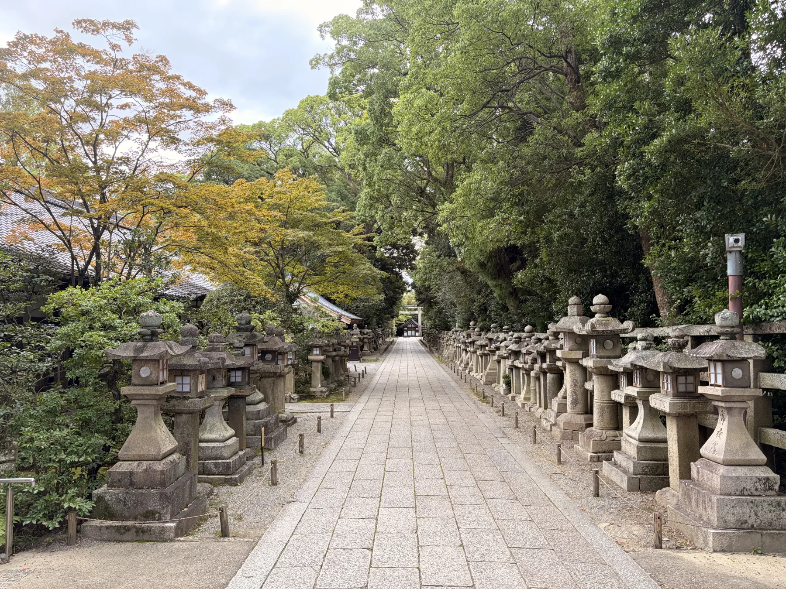
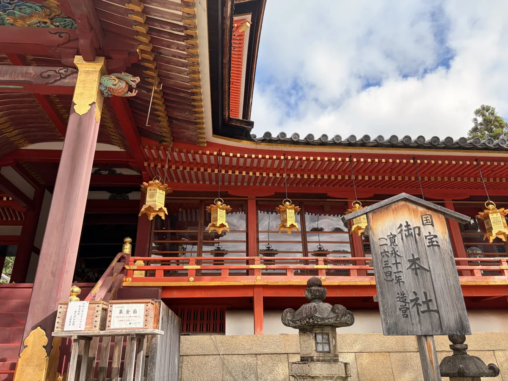
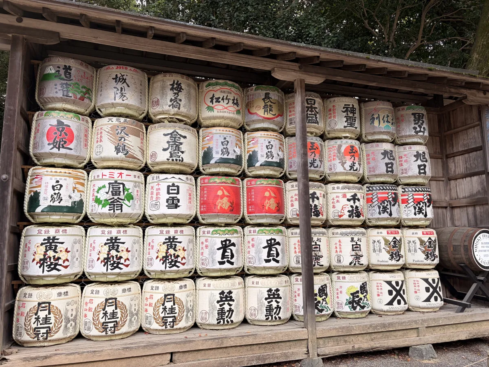
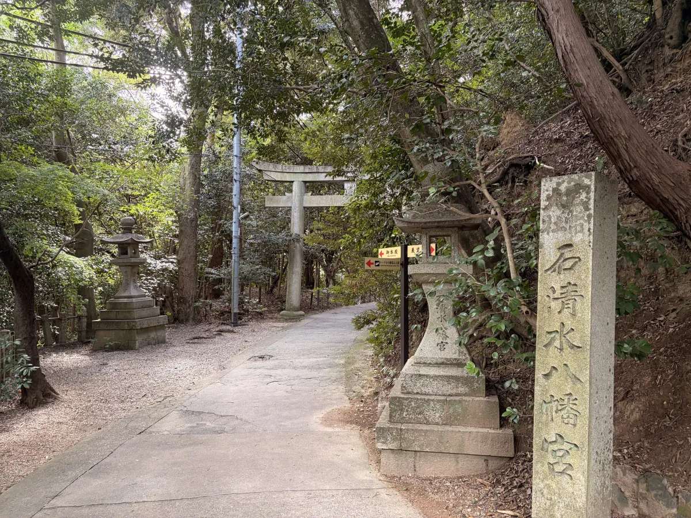
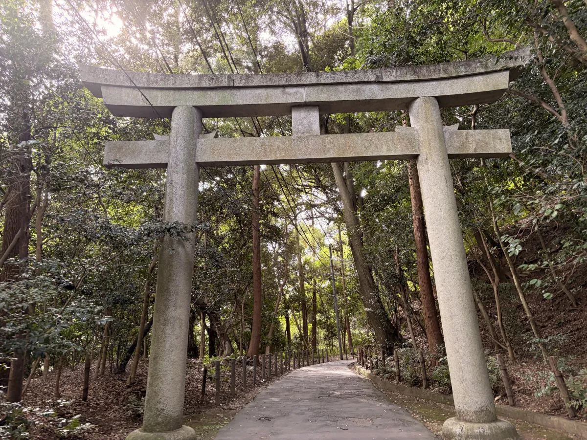

Iwashimizu Hachimangu offers a different rhythm from a day in central
Kyoto. Set on Mount Otokoyama, it brings together a grand vermilion
shrine, quiet woodland paths, rows of stone lanterns, and an open view
across southern Kyoto.
It suits travelers who would rather spend a few hours walking and
looking closely than hurry between a long list of famous sights. The
shrine and mountain fit naturally into a relaxed half-day.
Why Visit Iwashimizu Hachimangu?
The main buildings are striking from a distance, but the visit becomes
more interesting as you slow down. Gold fittings catch the light against
vermilion woodwork, lanterns hang beneath the eaves, and smaller cultural
details appear around the grounds.
Beyond the architecture, the mountain setting matters just as much.
Paths continue beneath mature trees, stone lanterns frame the approach,
and the viewpoint reminds you that this is a shrine above the city rather
than simply another stop at street level.
A Quieter Side of Kyoto
There is room here to walk at a slower pace. Away from the busiest
sightseeing areas, you can pause beside the lanterns, listen to the
trees, and notice the grounds without feeling that you need to move on.

A quiet approach lined with stone lanterns beneath the trees.
Taka’s Note
This is one of my favorite places near The Showa House, and I often
recommend it to guests when they check in. I love how quiet it feels
here—the forest, the stone lanterns, and the paths around the shrine
make it a place I never feel like rushing through. If you have time,
slow down and enjoy the walk.
Details Worth Looking At
Some of the most memorable parts of the shrine are small enough to
miss when you are walking quickly. Look beneath the eaves and around
the edges of the grounds as you go.
Vermilion, Gold, and Lanterns
Close to the main shrine, carved brackets, tiled roofs, gold fittings,
and hanging lanterns create layers of detail around the vivid woodwork.

Architectural details beside the main shrine.
Offered Sake Barrels
The decorative barrels have been offered by breweries. They reflect
the long connection between sake and Shinto ceremonies, while their
labels make each row visually distinctive.

Sake barrels offered by breweries at the shrine.
Walk Through the Forest
Iwashimizu Hachimangu is not only a place to view the main buildings.
Routes continue through the forest and beneath stone torii, so the walk
across Mount Otokoyama becomes part of the visit itself.

A woodland path leading toward the shrine grounds.

A stone torii standing beneath the forest canopy.
The View from Mt. Otokoyama
The viewpoint opens across southern Kyoto and the land below the
mountain. The character of the scene changes with the weather, but the
sense of space is a welcome contrast after walking beneath the trees.
Think of Iwashimizu Hachimangu as a half-day outing if you want the
visit to feel unhurried. A shorter visit can focus on the main shrine,
while extra time gives you space for the stone-lantern approach, forest
paths, and viewpoint.
Your timing will also depend on whether you walk up Mount Otokoyama,
take the cable car, or use one option in each direction. The walk to the
top takes around 20 minutes at a comfortable pace, although this varies
from person to person. On hot or wet days, the cable car is the gentler
choice.
If you are planning a light arrival day, our
relaxed first-afternoon route
shows how the shrine can fit into a simple outing from Kuzuha.
Getting There from The Showa House
The Showa House is in Kuzuha, about a 10-minute walk from Kuzuha
Station. From there, Iwashimizu-hachimangu Station is two local stops
on the Keihan Main Line. The same railway corridor also makes the shrine
practical for travelers approaching from Osaka or combining it with a
wider Kyoto stay.
From the station, follow the shrine approach toward Mount Otokoyama,
then choose the walking route or the Iwashimizu-hachimangu-sando cable.
Staying at The Showa House makes the shrine an easy
addition to a slower Kyoto day without turning it into a complicated
itinerary.